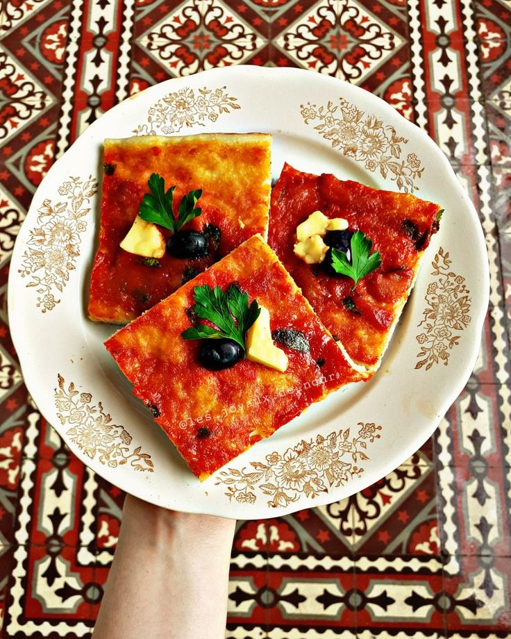

Pizza Carré Recipe - Algerian Square Pizza (Saft)
Home

Description
Pizza Carré is an Algerian traditional pizza without cheese. It is typically sliced and served in squares and often consists of the traditional tomato sauce and olive in the center as a base. People typically add sardines or tuna and whatever else they prefer as this pizza is quite "customizable"
What you'll need
Tools
- Blender
- Oven
- Bowls
- Flat surface
- Baking tray
- A fork or sharp object
Ingredients
For the dough:
- 400g flour
- 50g fine semolina
- 1 tablespoon of granulated sugar
- 10g fresh yeast or 3gr dry yeast (1 tablespoon)
- ~300ml warm water
For the tomato sauce:
- 4 ripe tomatoes
- 1 white onion
- Salt
- Black pepper
- 1 teaspoon of paprika
- 2 tablespoons of olive oil
- Olives of your preference
And optionally for decoration:
- 1 bouquet of chopped parsley
- Extra olive oil
Steps
- In a large bowl, mix the flour, the semolina and the salt.
- Crumble the fresh yeast on the top with the sugar.
- Pour the warm water and olive oil into the flour mixture.
- Stir until the dough starts to come together.
- On a floured surface, knead the dough for about 5-10 minutes until it becomes smooth and elastic.
- Place the dough in an oiled bowl, cover it with a clean towel, and let it rise in a warm place for 1-2 hours, or until it doubles in size.
- Once the dough has risen, press it into an oiled rectangular baking tray.
- Flatten the dough over the entire surface, aiming for a thickness of 2 cm.
- Prick the dough with a fork over the entire surface.
- Pour the tomato sauce over the entire surface of the pizza, add the black olives, spacing them out, and sprinkle finely chopped parsley on top.
- Bake the Pizza for 20-25 minutes at 200C degrees until the bottom it’s golden brown.
- Let it cool slightly before slicing and serving.
Enjoy!